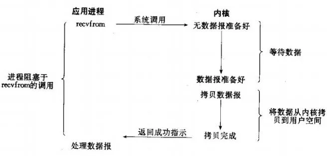

网络 深入理解Linux五种IO模型
一、相关概念讲解
1、同步与异步
同步就是一个任务的完成需要依赖另外一个任务时，只有等待被依赖的任务完成后，依赖的任务才能算完成，这是一种可靠的任务序列。要么成功都成功，失败都失败，两个任务的状态可以保持一致。
异步是不需要等待被依赖的任务完成，只是通知被依赖的任务要完成什么工作，依赖的任务也立即执行，只要自己完成了整个任务就算完成了。至于被依赖的任务最终是否真正完成，依赖它的任务无法确定，所以它是不可靠的任务序列。
2、堵塞与非堵塞
阻塞和非阻塞这两个概念与 $\color{red} {程序（线程）等待消息通知} $ (无所谓同步或者异步)时的状态有关。也就是说阻塞与非阻塞主要是 $\color{red} {程序（线程）等待消息通知时的状态} $ 角度来说的。
阻塞调用是指调用结果返回之前，当前线程会被挂起，一直处于等待消息通知，不能够执行其他业务。函数只有在得到结果之后才会返回。
非阻塞和阻塞的概念相对应，指在不能立刻得到结果之前，该函数不会阻塞当前线程，而会立刻返回。虽然表面上看非阻塞的方式可以明显的提高CPU的利用率，但是也带了另外一种后果就是系统的线程切换增加。增加的CPU执行时间能不能补偿系统的切换成本需要好好评估。
(a) 如果这个线程在等待当前函数返回时，仍在执行其他消息处理，那这种情况就叫做同步非阻塞；
(b) 如果这个线程在等待当前函数返回时，没有执行其他消息处理，而是处于挂起等待状态，那这种情况就叫做同步阻塞；
$\color{red} {同步/异步关注的是消息通知的机制，而阻塞/非阻塞关注的是程序（线程）等待消息通知时的状态。} $
3、用户空间与内核空间
现在操作系统都是采用虚拟存储器，那么对32位操作系统而言，它的寻址空间（虚拟存储空间）为4G（2的32次方）。
操作系统的核心是内核，独立于普通的应用程序，可以访问受保护的内存空间，也有访问底层硬件设备的所有权限。
为了保证用户进程不能直接操作内核（kernel），保证内核的安全，操作系统将虚拟空间划分为两部分，一部分为内核空间，一部分为用户空间。
针对linux操作系统而言，
将最高的1G字节（从虚拟地址0xC0000000到0xFFFFFFFF），供内核使用，称为内核空间，
而将较低的3G字节（从虚拟地址0x00000000到0xBFFFFFFF），供各个进程使用，称为用户空间。
4、进程切换
为了控制进程的执行，内核必须有能力挂起正在CPU上运行的进程，并恢复以前挂起的某个进程的执行。
这种行为被称为进程切换。因此可以说，任何进程都是在操作系统内核的支持下运行的，是与内核紧密相关的。
从一个进程的运行转到另一个进程上运行，这个过程中经过下面这些变化：
- 保存处理机上下文，包括程序计数器和其他寄存器。
- 更新PCB信息。
- 把进程的PCB移入相应的队列，如就绪、在某事件阻塞等队列。
- 选择另一个进程执行，并更新其PCB。
- 更新内存管理的数据结构。
- 恢复处理机上下文。
注：总而言之就是很耗资源
5、进程的堵塞
正在执行的进程，由于期待的某些事件未发生，如请求系统资源失败、等待某种操作的完成、新数据尚未到达或无新工作做等，则由系统自动执行阻塞原语(Block)，使自己由运行状态变为阻塞状态。可见，进程的阻塞是进程自身的一种主动行为，也因此只有处于运行态的进程（获得CPU），才可能将其转为阻塞状态。当进程进入阻塞状态，是不占用CPU资源的。
6、文件描述符
文件描述符（File descriptor）是计算机科学中的一个术语，是一个用于表述指向文件的引用的抽象化概念。
文件描述符在形式上是一个非负整数。实际上，$\color{red} {它是一个索引值，指向内核为每一个进程所维护的该进程打开文件的记录表。} $ 当程序打开一个现有文件或者创建一个新文件时，内核向进程返回一个文件描述符。在程序设计中，一些涉及底层的程序编写往往会围绕着文件描述符展开。但是文件描述符这一概念往往只适用于UNIX、Linux这样的操作系统。
7、缓存
缓存 IO 又被称作标准 IO，大多数文件系统的默认 IO 操作都是缓存 IO。在 Linux 的缓存 IO 机制中，操作系统会将 IO 的数据缓存在文件系统的页缓存（page cache ）中，也就是说，数据会先被拷贝到操作系统内核的缓冲区中，然后才会从操作系统内核的缓冲区拷贝到应用程序的地址空间。
缓存 IO 的缺点：
数据在传输过程中需要在应用程序地址空间和内核进行多次数据拷贝操作，这些数据拷贝操作所带来的 CPU 以及内存开销是非常大的。
二、IO模型
网络IO的本质是socket的读取，socket在linux系统被抽象为流，IO可以理解为对流的操作。刚才说了，对于一次IO访问（以read举例），数据会先被拷贝到操作系统内核的缓冲区中，然后才会从操作系统内核的缓冲区拷贝到应用程序的地址空间。
所以说，当一个read操作发生时，它会经历两个阶段：
第一阶段：等待数据准备 (Waiting for the data to be ready)。
第二阶段：将数据从内核拷贝到进程中 (Copying the data from the kernel to the process)。
对于socket流而言，
第一步：通常涉及等待网络上的数据分组到达，然后被复制到内核的某个缓冲区。
第二步：把数据从内核缓冲区复制到应用进程缓冲区。
网络应用需要处理的无非就是两大类问题，网络IO，数据计算。相对于后者，网络IO的延迟，给应用带来的性能瓶颈大于后者。
网络IO的模型大致有如下几种：
- 同步模型（synchronous IO）
- 阻塞IO（bloking IO） BIO
- 非阻塞IO（non-blocking IO） NIO
- 多路复用IO（multiplexing IO）
- 信号驱动式IO（signal-driven IO）
- 异步IO（asynchronous IO） AIO
注：由于signal driven IO在实际中并不常用，所以我这只提及剩下的四种IO Model。
1、阻塞IO模型
应用程序调用一个 IO 函数，导致应用程序阻塞，等待数据准备好。 如果数据没有准备好，一直等待…数据准备好了，从内核拷贝到用户空间,IO 函数返回成功指示。
当调用 recv()函数时，系统首先查是否有准备好的数据。如果数据没有准备好，那么系统就处于等待状态。当数据准备好后，将数据从系统缓冲区复制到用户空间，然后该函数返回。在套接应用程序中，当调用 recv()函数时，未必用户空间就已经存在数据，那么此时 recv()函数就会处于等待状态。

2、非阻塞IO模型，同步
我们把一个 SOCKET 接口设置为非阻塞就是告诉内核，当所请求的 I/O 操作无法完成时，不要将进程睡眠，而是返回一个错误。这样我们的 I/O 操作函数将不断的测试数据是否已经准备好，如果没有准备好，继续测试，直到数据准备好为止。在这个不断测试的过程中，会大量的占用 CPU 的时间。上述模型绝不被推荐。
3、IO 复用模型
由于同步非阻塞方式需要不断主动轮询，轮询占据了很大一部分过程，轮询会消耗大量的CPU时间，而 “后台” 可能有多个任务在同时进行，人们就想到了循环查询多个任务的完成状态，只要有任何一个任务完成，就去处理它。如果轮询不是进程的用户态，而是有人帮忙就好了。那么这就是所谓的 “IO 多路复用”
IO多路复用有两个特别的系统调用select、poll、epoll函数。select调用是内核级别的，select轮询相对非阻塞的轮询的区别在于—前者可以等待多个socket，能实现同时对多个IO端口进行监听，当其中任何一个socket的数据准好了，就能返回进行可读，然后进程再进行recvform系统调用，将数据由内核拷贝到用户进程，当然这个过程是阻塞的。select或poll调用之后，会阻塞进程，与blocking IO阻塞不同在于，此时的select不是等到socket数据全部到达再处理, 而是有了一部分数据就会调用用户进程来处理。如何知道有一部分数据到达了呢？监视的事情交给了内核，内核负责数据到达的处理。也可以理解为"非阻塞"吧。
I/O复用模型会用到select、poll、epoll函数，这几个函数也会使进程阻塞，但是和阻塞I/O所不同的的，这两个函数可以同时阻塞多个I/O操作。而且可以同时对多个读操作，多个写操作的I/O函数进行检测，直到有数据可读或可写时（注意不是全部数据可读或可写），才真正调用I/O操作函数。
对于多路复用，也就是轮询多个socket。多路复用既然可以处理多个IO，也就带来了新的问题，多个IO之间的顺序变得不确定了，当然也可以针对不同的编号。
在I/O编程过程中，当需要同时处理多个客户端接入请求时，可以利用多线程或者I/O多路复用技术进行处理。I/O多路复用技术通过把多个I/O的阻塞复用到同一个select的阻塞上，从而使得系统在单线程的情况下可以同时处理多个客户端请求。与传统的多线程/多进程模型比，I/O多路复用的最大优势是系统开销小，系统不需要创建新的额外进程或者线程，也不需要维护这些进程和线程的运行，降底了系统的维护工作量，节省了系统资源，I/O多路复用的主要应用场景如下：
1、服务器需要同时处理多个处于监听状态或者多个连接状态的套接字。 2、服务器需要同时处理多种网络协议的套接字。
此时你是不是想到的了redis如何做的啊，redis用的就是多路复用。
4、信号驱动IO
简介：两次调用，两次返回；
首先我们允许套接口进行信号驱动 I/O,并安装一个信号处理函数，进程继续运行并不阻塞。当数据准备好时，进程会收到一个 SIGIO 信号，可以在信号处理函数中调用 I/O 操作函数处理数据。
5、异步IO模型
相对于同步IO，异步IO不是顺序执行。用户进程进行aio_read系统调用之后，无论内核数据是否准备好，都会直接返回给用户进程，然后用户态进程可以去做别的事情。等到socket数据准备好了，内核直接复制数据给进程，然后从内核向进程发送通知。IO两个阶段，进程都是非阻塞的。
Linux提供了AIO库函数实现异步，但是用的很少。目前有很多开源的异步IO库，例如libevent、libev、libuv。
6、五种I/O模型的比较
不同 I/O 模型的区别，其实主要在等待数据和数据复制这两个时间段不同，图形中已经表示得很清楚了。
通过上面的图片，可以发现non-blocking IO和asynchronous IO的区别还是很明显的。在non-blocking IO中，虽然进程大部分时间都不会被block，但是它仍然要求进程去主动的check，并且当数据准备完成以后，也需要进程主动的再次调用recvfrom来将数据拷贝到用户内存。而asynchronous IO则完全不同。它就像是用户进程将整个IO操作交给了他人（kernel）完成，然后他人做完后发信号通知。在此期间，用户进程不需要去检查IO操作的状态，也不需要主动的去拷贝数据。
同步非阻塞方式相比同步阻塞方式：
优点：能够在等待任务完成的时间里干其他活了（包括提交其他任务，也就是 “后台” 可以有多个任务在同时执行）。
缺点：任务完成的响应延迟增大了，因为每过一段时间才去轮询一次read操作，而任务可能在两次轮询之间的任意时间完成。这会导致整体数据吞吐量的降低。
三、select 、poll 、epoll的区别？
1、支持一个进程所能打开的最大连接数
2、FD （文件描述符）剧增后带来的 IO 效率问题
3、消息传递方式
综上，在选择select，poll，epoll 时要根据具体的使用场合以及这三种方式的自身特点。
- 表面上看 epoll 的性能最好，但是在连接数少并且连接都十分活跃的情况下，select 和 poll 的性能可能比 epoll 好，毕竟 epoll 的通知机制需要很多函数回调。
- select 低效是因为每次它都需要轮询。但低效也是相对的，视情况而定，也可通过良好的设计改善
补充知识点：
Level_triggered(水平触发)：当被监控的文件描述符上有可读写事件发生时，epoll_wait()会通知处理程序去读写。如果这次没有把数据一次性全部读写完(如读写缓冲区太小)，那么下次调用 epoll_wait()时，它还会通知你在上没读写完的文件描述符上继续读写，当然如果你一直不去读写，它会一直通知你！如果系统中有大量你不需要读写的就绪文件描述符，而它们每次都会返回，这样会大大降低处理程序检索自己关心的就绪文件描述符的效率！
Edge_triggered(边缘触发)：当被监控的文件描述符上有可读写事件发生时，epoll_wait()会通知处理程序去读写。如果这次没有把数据全部读写完(如读写缓冲区太小)，那么下次调用 epoll_wait()时，它不会通知你，也就是它只会通知你一次，直到该文件描述符上出现第二次可读写事件才会通知你！这种模式比水平触发效率高，系统不会充斥大量你不关心的就绪文件描述符！
select()，poll()模型都是水平触发模式，信号驱动IO是边缘触发模式，
epoll()模型即支持水平触发，也支持边缘触发，默认是水平触发。